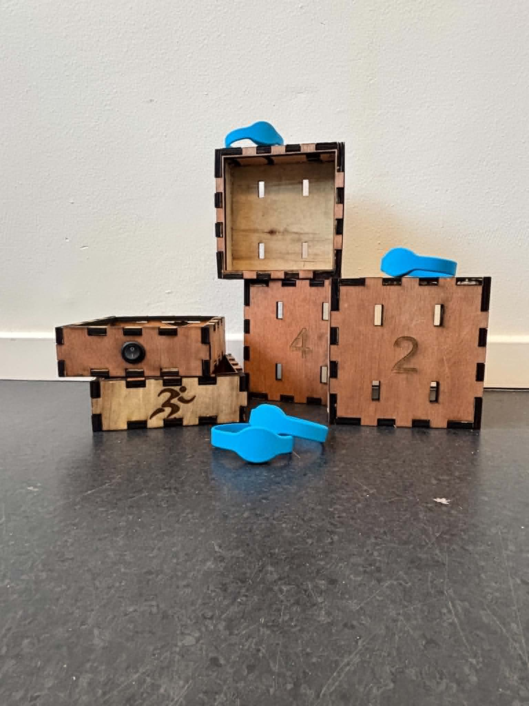

← Back to projects
TagRun
An RFID-based platform that tracks athletes during parkour and freerunning challenges and shows the results in a connected web application.
Overview
TagRun was built as a tracking concept for athletic events, where RFID tags are used to identify participants and show live timing or position data in a web app.
Core flow
- RFID hardware captures athlete identification at checkpoints
- Raspberry Pi handles the device side and sends data onward
- FastAPI exposes the collected data to the front end
- The React and HTML/CSS interface presents results in a clear dashboard
Design focus
The project needed to feel fast and readable, because the main use case is tracking people during physical challenges rather than browsing a traditional app.
